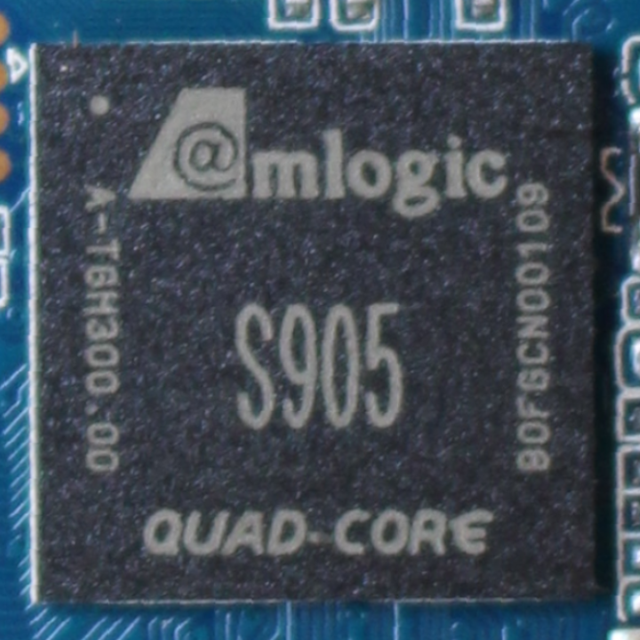

Amlogic S905
|
 Amlogic S905 | |
| Manufacturer | Amlogic |
|---|---|
| Name | S905 |
| Architecture | aarch64 |
| CPU | 4x 2 GHz Cortex-A53 |
| GPU | Mali-450 |
| Year | 2015 |
| Process | 28nm |
| Mainline | yes |
| Community Page | https://linux-meson.com/ |
| Components | |
| CPU |
Works
|
| UART |
Works
|
| Storage |
Partial
|
| USB |
Works
|
| Display |
Works
|
| GPU |
Works
|
| Pinctrl |
Works
|
| I²C |
Works
|
| SPI | |
| Audio |
Works
|
| Video |
Partial
|
| Thermal |
Works
|
| NPU | |
| Suspend |
Broken
|
| Ethernet | |
{kind=link}
The Amlogic S905, also known as Meson GXBB, is a fairly capable high-end media player SoC mainly used in Android set-top boxes. It's the first 64-bit Amlogic SoC, and is capable of hardware decoding up to 4K@60fps, for multiple formats including H.264, AVS+, and 10-bit. It's part of the GXBB family of Amlogic SoCs. It has great U-Boot and mainline Linux support, making it a great candidate for building a set-top box or single-board computer powered by postmarketOS.
Devices
| Device | Codename | Chipset | Mainline | booting |
|---|---|---|---|---|
| Videostrong KII Pro | videostrong-kii-pro | Amlogic S905 | Y | Yes |
Boot process
See: Amlogic#Boot process
BL1 looks for a header (named @AML header) at different offsets depending on the storage media:
- On an SD card: offset 512 (512 bytes completly ignored by BL1), header and checksum from offset 528 to 623, payload at offset 4608 onwards
- On eMMC: offset 0, header and checksum from offset 16 to 111, payload at offset 4096 onwards
There's a bug where, because of the zero-offset requirement on eMMC, MBR structures cannot coexist, requiring tweaks to allow an MBR parition table to coexist. Further reading: https://github.com/LibreELEC/amlogic-boot-fip/pull/8
BL2 is signed by using a proprietary utility from Amlogic called aml_encrypt_gxb, for example:
$ aml_encrypt_gxb --bootsig --input boot_new.bin --output u-boot.img
There's a replacement for aml_encrypt_gxb called amlbootsig. See https://github.com/afaerber/meson-tools. For example, one could use:
$ amlbootsig boot_new.bin u-boot.img
It has been confirmed to work on ODROID-C2 and Videostrong KII Pro (videostrong-kii-pro).
Then BL2 loads the following:
- BL30/SCP_BL2: System control processor firmware
- BL31: EL3 Runtime Software
- BL32: OPTEE (optional)
- BL33: U-Boot
All bootloader stages except U-Boot are proprietary. BL31 can be replaced with upstream Arm Trusted Firmware-A. There's also an ongoing effort led by User:F to reverse-engineer BL2 and port U-Boot SPL.
Status
GPU and hardware acceleration
Works. Lima is used for hardware acceleration.
IR RX
Works. Aftermarket and original IR remotes are expected to work out of the box (as seen on Videostrong KII Pro (videostrong-kii-pro)). Doesn't require much configuration.
Audio
HDMI audio works, but S/PDIF is untested.
X11
Works fine. A custom configuration file is needed else it crashes (included).
HDMI-CEC
Sort of works. The TV detects a CEC device, but you cannot use the TV's remote to control the set-top box (at least, on Plasma Bigscreen).
Seems like libcec does detect which button in the remote is pressed.
Hardware decoding and encoding
See: https://libera.irclog.whitequark.org/linux-amlogic/2023-02-10
The Amlogic S905(-H) supports hardware decoding up to 4K@60fps, but in the mainline kernel it's limited to 1080p. Downstream kernels relied on lengthy hacks to get it working up to 4K, and thus they were not included in the mainline kernel (to their defense Amlogic did successfully enable 4K playback on 3.x kernels).
To get hardware encoding to work, refer to this issue comment. It boils down to:
- Making sure CONFIG_VIDEO_MESON_VDEC is set:
zcat /proc/config.gz | grep CONFIG_VIDEO_MESON_VDEC(See pmaports!4071) - Build FFmpeg from https://github.com/jc-kynesim/rpi-ffmpeg/commits/dev/4.4/rpi_import_1
There are some issues, however:
- Needs non-free firmware
- 10-bit media (e.g. 4K) won't work
- MPEG1/2/4 support is broken
So sometimes you may want to resort to using software decoding.
Hardware encoding doesn't work yet.
Suspend
Broken
DVB
Needs a demux driver.
OTG
Untested. Broken according to linux-meson.com
U-Boot
Most (all?) set-top boxes based on this SoC use U-Boot as their primary bootloader, but mainline U-Boot has great support for this
SoC. Running mainline U-Boot as the primary bootloader and as the secondary bootloader works fine. If you want to use U-Boot as the
primary bootloader, refer to Videostrong KII Pro (videostrong-kii-pro)/U-Boot as primary bootloader, replacing mentions of wetek-play2
with your device or one close enough (which have RAM timings that work on your device). Please note that BL2 and BL30 are proprietary; there's an on-going
effort on porting mainline Arm Trusted Firmware-A to Videostrong KII Pro (videostrong-kii-pro).